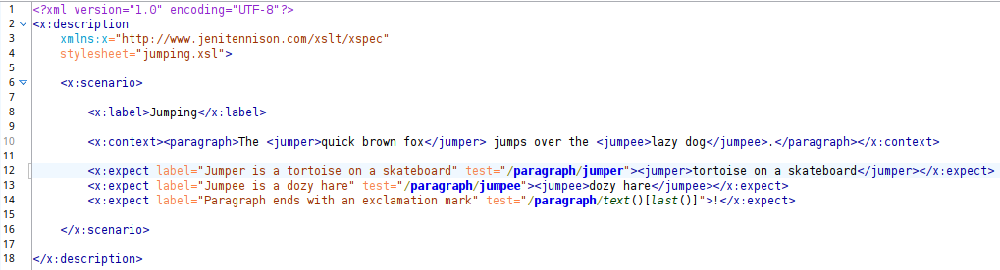
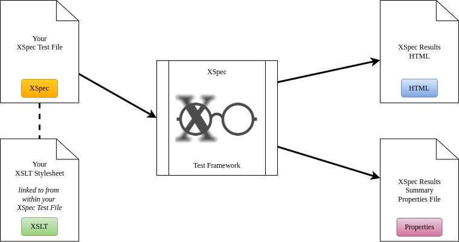
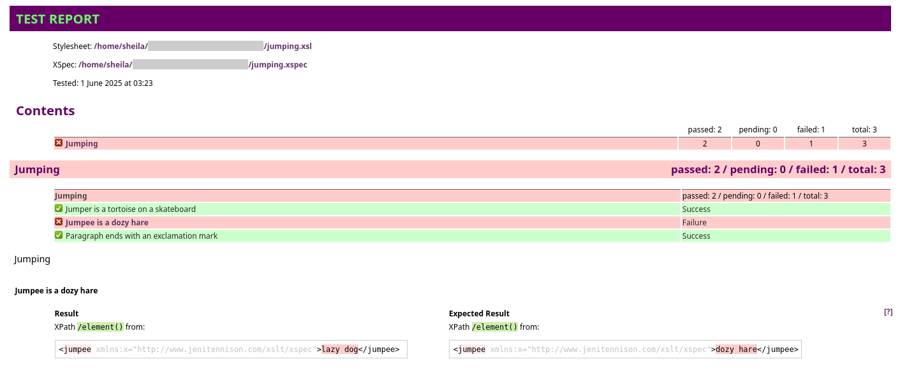

Figure 4, shows the XML for a very simple XSpec file (jumping.xspec) to test an XSLT file named jumping.xsl. The input data is provided inline, wrapped within an x:context element (line 10). This example contains three tests (lines 12-14).
Figure 4. Simple XSpec test file
|  |
XSpec takes the test file as an input and uses /x:description/@stylesheet to locate the XSLT file (see Figure 5, “Inputs and outputs when testing XSLT with XSpec (high-level)”). When it’s finished evaluating the tests, it outputs two result documents: one containing a detailed breakdown of the results and showing any errors found (HTML) and the other a simple ANT properties file containing the overall result (pass/fail).
Figure 5. Inputs and outputs when testing XSLT with XSpec (high-level)
|  |
For the purposes of this example, the XSLT hasn’t been updated to change “lazy dog” to “dozy hare” so the second test (line 13) fails. See Figure 6 for an screenshot of the HTML results file. Notice that for the failed test, the report includes a diff visualisation of the actual result returned by the XSLT (on the left) and the “Expected Result” that was specified on line 13 of the XSpec test file.
Figure 6. XSpec results (HTML)
|  |
One of the key advantages of XSpec over other diff tools is the option to use XPath to target and test sub-sections of content. For more in-depth tutorials, see the Getting Started section on the official XSpec wiki.[GETST]